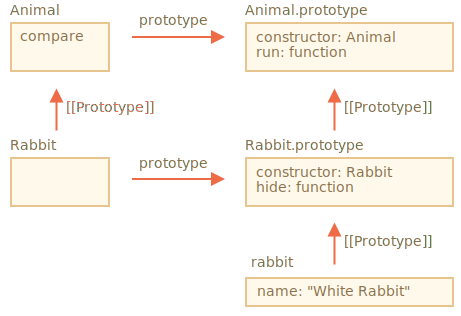

我们可以把一个方法赋值给类的函数本身，而不是赋给它的 "prototype"。这样的方法被称为 静态的（static）。
在一个类中，它们以 static 关键字开头，如下所示：
class User {
static staticMethod() {
alert(this === User);
}
}
User.staticMethod(); // true这实际上跟直接将其作为属性赋值的作用相同：
class User { }
User.staticMethod = function() {
alert(this === User);
};
User.staticMethod(); // true在 User.staticMethod() 调用中的 this 的值是类构造器 User 自身（“点符号前面的对象”规则）。
通常，静态方法用于实现属于该类但不属于该类任何特定对象的函数。
例如，我们有对象 Article，并且需要一个方法来比较它们。一个自然的解决方案就是添加 Article.compare 方法，像下面这样：
class Article {
constructor(title, date) {
this.title = title;
this.date = date;
}
static compare(articleA, articleB) {
return articleA.date - articleB.date;
}
}
// 用法
let articles = [
new Article("HTML", new Date(2019, 1, 1)),
new Article("CSS", new Date(2019, 0, 1)),
new Article("JavaScript", new Date(2019, 11, 1))
];
articles.sort(Article.compare);
alert( articles[0].title ); // CSS这里 Article.compare 代表“上面的”文章，意思是比较它们。它不是文章的方法，而是整个 class 的方法。
另一个例子是所谓的“工厂”方法。想象一下，我们需要通过几种方法来创建一个文章：
title，date 等）。第一种方法我们可以通过 constructor 来实现。对于第二种方式，我们可以创建类的一个静态方法来实现。
就像这里的 Article.createTodays()：
class Article {
constructor(title, date) {
this.title = title;
this.date = date;
}
static createTodays() {
// 记住 this = Article
return new this("Today's digest", new Date());
}
}
let article = Article.createTodays();
alert( article.title ); // Today's digest现在，每当我们需要创建一个今天的文章时，我们就可以调用 Article.createTodays()。再说明一次，它不是一个文章的方法，而是整个 class 的方法。
静态方法也被用于与数据库相关的公共类，可以用于搜索/保存/删除数据库中的条目， 就像这样：
// 假定 Article 是一个用来管理文章的特殊类
// 静态方法用于移除文章：
Article.remove({id: 12345});[recent browser=Chrome]
静态的属性也是可能的，它们看起来就像常规的类属性，但前面加有 static：
class Article {
static publisher = "Levi Ding";
}
alert( Article.publisher ); // Levi Ding这等同于直接给 Article 赋值：
Article.publisher = "Levi Ding";静态属性和方法是可被继承的。
例如，下面这段代码中的 Animal.compare 和 Animal.planet 是可被继承的，可以通过 Rabbit.compare 和 Rabbit.planet 来访问：
class Animal {
static planet = "Earth";
constructor(name, speed) {
this.speed = speed;
this.name = name;
}
(speed = 0) {
this.speed += speed;
alert(`${this.name} runs with speed ${this.speed}.`);
}
static compare(animalA, animalB) {
return animalA.speed - animalB.speed;
}
}
// 继承于 Animal
class Rabbit extends Animal {
hide() {
alert(`${this.name} hides!`);
}
}
let rabbits = [
new Rabbit("White Rabbit", 10),
new Rabbit("Black Rabbit", 5)
];
rabbits.sort(Rabbit.compare);
rabbits[0].run(); // Black Rabbit runs with speed 5.
alert(Rabbit.planet); // Earth现在我们调用 Rabbit.compare 时，继承的 Animal.compare 将会被调用。
它是如何工作的？再次，使用原型。你可能已经猜到了，extends 让 Rabbit 的 [[Prototype]] 指向了 Animal。

所以，Rabbit extends Animal 创建了两个 [[Prototype]] 引用：
Rabbit 函数原型继承自 Animal 函数。Rabbit.prototype 原型继承自 Animal.prototype。结果就是，继承对常规方法和静态方法都有效。
这里，让我们通过代码来检验一下：
class Animal {}
class Rabbit extends Animal {}
// 对于静态的
alert(Rabbit.__proto__ === Animal); // true
// 对于常规方法
alert(Rabbit.prototype.__proto__ === Animal.prototype); // true静态方法被用于实现属于整个类的功能。它与具体的类实例无关。
举个例子， 一个用于进行比较的方法 Article.compare(article1, article2) 或一个工厂（factory）方法 Article.createTodays()。
在类生命中，它们都被用关键字 static 进行了标记。
静态属性被用于当我们想要存储类级别的数据时，而不是绑定到实例。
语法如下所示：
class MyClass {
static property = ...;
static method() {
...
}
}从技术上讲，静态声明与直接给类本身赋值相同：
MyClass.property = ...
MyClass.method = ...静态属性和方法是可被继承的。
对于 class B extends A，类 B 的 prototype 指向了 A：B.[[Prototype]] = A。因此，如果一个字段在 B 中没有找到，会继续在 A 中查找。